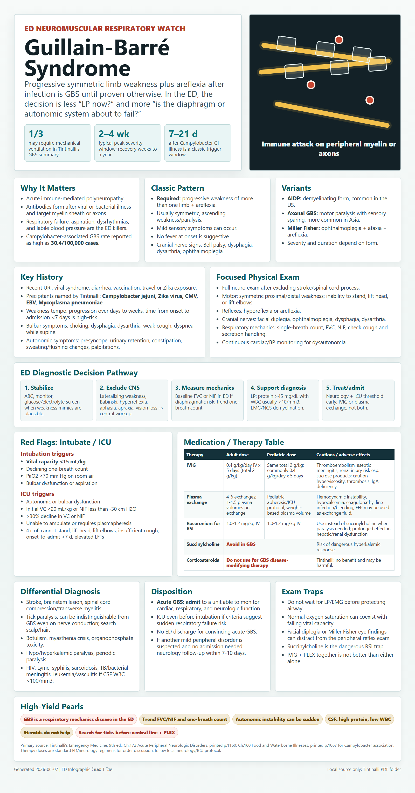

Guillain-Barré Syndrome
ED infographic: ascending weakness + areflexia, respiratory/autonomic risk, diagnostic pathway, treatment, and disposition.

ED framing
- Progressive symmetric weakness of more than one limb with areflexia is the diagnostic core.
- The immediate ED priority is respiratory mechanics and dysautonomia, not waiting for confirmatory tests.
Epidemiology / why it matters
- Symptoms peak over 2-4 weeks; recovery can take weeks to a year.
- Paralysis can reach the diaphragm; Tintinalli notes mechanical ventilation may be required in one third of patients.
- Campylobacter infection is associated with GBS, reported up to 30.4 per 100,000 cases; symptoms often appear 7-21 days after GI symptoms resolve.
Pathophysiology
- Immune-mediated peripheral nerve myelin sheath or axonal destruction.
- Antibodies are thought to form after viral or bacterial illness and target myelin/axons; antiganglioside antibodies are implicated.
- Classic demyelinating GBS is common in the US; axonal forms are more common in Asia; Miller Fisher syndrome is ophthalmoplegia, ataxia, and areflexia.
History
- Recent viral illness, diarrhea, Campylobacter, Zika, CMV, EBV, or Mycoplasma pneumoniae exposure.
- Ascending weakness, heaviness, paresthesias, gait failure, dysphagia, dysarthria, dyspnea, orthostasis, urinary retention, constipation, palpitations.
Focused exam
- Exclude central findings: aphasia, apraxia, vision loss, Babinski sign, hyperreflexia, spasticity, strong lateralization.
- Document strength by limb group, reflexes, sensory modalities, cranial nerves, cough, secretion handling, single-breath count, FVC, NIF, telemetry/BP.
Red flags
- VC <15 mL/kg, declining one-breath count, PaO2 <70 mm Hg on room air, bulbar dysfunction, or aspiration -> intubation criteria.
- ICU criteria include autonomic/bulbar dysfunction, VC <20 mL/kg, NIF less than -30 cm H2O, >30% decline in VC/NIF, inability to ambulate, plasmapheresis, or 4+ high-risk functional markers from Tintinalli Table 172-3.
Diagnostics
- Diagnosis is mostly historical; LP and electrodiagnostic testing improve confidence.
- CSF: protein >45 mg/dL and WBC usually <10/mm3, predominantly mononuclear.
- If CSF WBC >100/mm3, consider HIV, Lyme, syphilis, sarcoidosis, TB/bacterial meningitis, leukemic infiltration, or CNS vasculitis.
- EMG/NCS: demyelination; MRI, if performed to rule out alternatives, may show affected nerve enhancement.
Treatment
- Assess respiratory function first; intubate before decompensation when criteria are met.
- Avoid succinylcholine because of hyperkalemic response risk.
- IVIG and plasma exchange both shorten recovery; neither is superior and combining them is not more effective.
- Corticosteroids have no benefit and may be harmful.
- Supportive care: aspiration prevention, dysautonomia monitoring, DVT prevention, pain control, nutrition, rehab planning.
Disposition
- Admit acute GBS to a unit that can monitor cardiac, respiratory, and neurologic function.
- Use ICU liberally when respiratory mechanics, bulbar function, autonomics, ambulation, or rapid progression are concerning.
- Do not discharge convincing acute GBS from the ED.
Medication and Therapy Table
| Therapy | Adult dose | Pediatric dose | Maximum | Cautions / adverse effects |
|---|---|---|---|---|
| IVIG | 0.4 g/kg/day IV x 5 days; total 2 g/kg | Same total 2 g/kg; commonly 0.4 g/kg/day x 5 days | No fixed max; consider ideal/adjusted dosing per protocol in severe obesity | Thromboembolism, aseptic meningitis, renal injury; caution IgA deficiency/anaphylaxis risk, hyperviscosity, thrombosis, renal disease, pregnancy risk-benefit. |
| Plasma exchange | 4-6 exchanges, 1-1.5 plasma volumes per exchange | Pediatric apheresis protocol, weight/plasma-volume based | Protocol dependent | Hypotension/hemodynamic instability, hypocalcemia, coagulopathy, line infection/bleeding; pregnancy requires maternal-fetal and hemodynamic planning. |
| Rocuronium for RSI | 1.0-1.2 mg/kg IV | 1.0-1.2 mg/kg IV | No universal max in RSI; dose by weight/protocol | Prolonged paralysis, anaphylaxis; caution hepatic/renal dysfunction. Use when paralytic required because succinylcholine is avoided. |
| Succinylcholine | Avoid | Avoid | N/A | Hyperkalemic response risk in GBS. |
| Corticosteroids | Not recommended as disease-modifying GBS therapy | Not recommended | N/A | Tintinalli: no benefit and may be harmful. |
Primary source: Tintinalli's Emergency Medicine, 9th ed., Ch.172 Acute Peripheral Neurologic Disorders, printed p.1160; Ch.160 Food and Waterborne Illnesses, printed p.1067 for Campylobacter association. Therapy doses are standard ED/neurology regimens for order discussion; follow local neurology/ICU protocol.